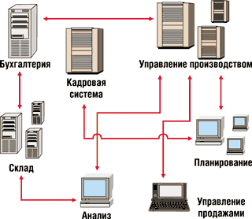
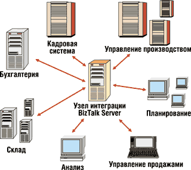
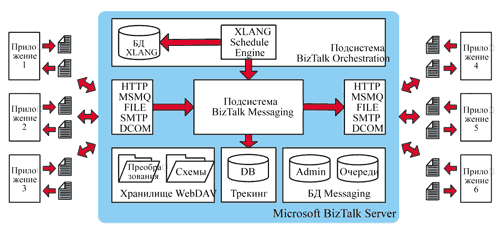

Александр Ложечкин,
начальник отдела исследований компании Digital Design, региональный директор
российского представительства Microsoft
alozhechkin@hotmail.com.
Со времени выхода первой версии BizTalk Server 2000 прошло чуть больше года (см. статью "Microsoft BizTalk Server 2000 как средство интеграции приложений и бизнес-процессов", "BYTE/Россия" № 2/2001, а также "Готовность систем управления предприятием к интеграции", "BYTE/Россия" № 9/2001). Посмотрим, какие же изменения содержит новая версия этого продукта, получившая номер 2002.
Назначение BizTalk Server
Microsoft BizTalk Server - продукт, предназначенный для решения задач интеграции приложений. Выделение проблем интеграции приложений в отдельную задачу в сфере ИТ произошло не так давно, около четырех лет назад. Задачи интеграции становились все более актуальными, но, как правило, или вовсе не решались, или решались ad hoc, т. е. специально для каждой конкретной пары приложений. Это, естественно, породило паутину трудно поддерживаемых и ненадежных связей, созданных в разное время и на базе разных стандартов и технологий. Такой способ можно назвать "стихийной интеграцией" (рис. 1).
|  | Рис. 1. "Стихийная" интеграция приложений.
|
Но интеграция в таком случае оказывается неэффективной. Если при одной-двух интеграционных связях она еще работает, то при увеличении числа интегрируемых приложений число связей между ними растет слишком быстро - решение перестает быть управляемым.
Возможен лишь один способ эффективного решения этих задач - возложить задачи интеграции на единый центральный "узел интеграции", в котором будет реализована инфраструктура интеграции, включающая возможность работы с различными транспортными протоколами и стандартами форматирования сообщений, средства обеспечения безопасности и надежной доставки сообщений (рис. 2).
|  | Рис. 2. Использование "узла интеграции".
|
Такая система решает основные проблемы "стихийной интеграции", становясь управляемой благодаря наличию единой точки "коммутации" приложений и единой точки конфигурирования связей. Исчезает зависимость системы от приложений - при необходимости замены, например, бухгалтерского приложения на радикально новую версию не потребуется переписывать заново все связи этого приложения с остальными, достаточно заменить одну связь от "узла интеграции" к интегрируемому приложению. Упрощается контроль за системой, а также ее разработка, поскольку при создании связи с приложением появляется возможность пользоваться услугами общей инфраструктуры интеграции (транспортными протоколами, универсальными и стандартными синтаксическими анализаторами сообщений, средствами обеспечения безопасного и гарантированного обмена сообщениями) и т. д.
На роль платформы для создания подобных узлов интеграции претендует продукт Microsoft BizTalk Server - сервер интеграции приложений. Основные направления использования BizTalk Server таковы:
- интеграция приложений внутри организации (Enterprise Application Integration);
- интеграция приложений бизнес-партнеров в рамках структуры B2B;
- автоматизация бизнес-процессов, протекающих в интегрируемых приложениях.
Платформа интеграции приложений Microsoft BizTalk Server
В состав BizTalk Server как платформы интеграции входят несколько подсистем и компонентов (рис. 3). Рассмотрим основные подсистемы BizTalk Server - Messaging и Orchestration.
|  |
| Рис. 3. Архитектура BizTalk Server.
|
Подсистема BizTalk Messaging
Прежде всего отметим, что BizTalk Server рассматривает любое взаимодействие с интегрируемым приложением как обмен сообщениями. Даже в случае интеграции с программным интерфейсом приложения BizTalk Server рассматривает вызов этого интерфейса как отправку сообщения с входными параметрами интерфейса и получение сообщения с результатом выполнения и выходными параметрами интерфейса.
Для интеграции с приложениями BizTalk Server поддерживает несколько транспортных протоколов: HTTP, SMTP, File (копирование файлов локально и по сети), MSMQ и COM. После получения сообщения от интегрируемого приложения-отправителя BizTalk Server анализирует его одним из имеющихся в его составе синтаксических анализаторов - XML, EDI и Flat file (плоский файл с разделителями или позиционный). При этом проверяется соответствие сообщения схеме файла (описанию его формата и структуры). Затем файл преобразуется во внутреннее представление сообщений в BizTalk Server, XML и поступает на вход преобразователя, который трансформирует сообщение в выходной XML-формат по правилам, заданным в описании преобразования. Далее этот XML-файл преобразуется с помощью выходного преобразователя в один из поддерживаемых форматов (XML, EDI и Flat file) и отправляется по одному из транспортных протоколов приложению-получателю.
Подсистема BizTalk Orchestration
Настройкой соединения с приложением интеграция не исчерпывается. Необходимо также настроить бизнес-процесс отправки и получения сообщений от разных приложений и синхронизировать несколько таких бизнес-процессов. За этим следит вторая подсистема BizTalk Server, название которой отражает ее назначение - BizTalk Orchestration (что на русский язык можно перевести как оркестровка или дирижирование). С помощью приложения BizTalk Orchestration Designer, построенного на базе инструментария Microsoft Visio, можно сконструировать бизнес-процесс, состоящий из действий, условий, циклов и параллельно выполняемых операций. Действием в этом процессе может быть отправка или получение сообщения от интегрируемого приложения. Для соединения с приложением могут использоваться как возможности анализа, преобразования сообщений и их доставки по разным транспортным протоколам в BizTalk Messaging, так и способность самой подсистемы BizTalk Orchestration отправлять и получать сообщения по очередям MSMQ и вызову методов COM-компонентов. Подробнее о подсистемах BizTalk Server можно узнать в дополнительных источниках, которые приведены в конце статьи.
Новое в BizTalk Server 2002
Описанные выше архитектура и функциональность присутствовали в BizTalk Server еще в первой версии, BizTalk Server 2000. Практически одновременно с выходом BizTalk Server 2000 Microsoft анонсировала в узком кругу бета-тестеров появление следующей версии BizTalk Server с кодовым названием Bizet - по имени французского композитора Жоржа Бизе (это было необычно для Microsoft, поскольку до этого кодовые имена ее продуктов на стадии разработки, как правило, соответствовали географическим названиям; для BizTalk Server с его "музыкальной" подсистемой Orchestration было сделано исключение). Первоначально эта версия BizTalk Server носила номер 1.5, чем подчеркивалась минимальность изменений в функциональности по сравнению с первой версией. И это действительно справедливо: BizTalk Server 2002 - скорее эволюционный, нежели революционный шаг в развитии платформы интеграции BizTalk Server. Тем не менее изменения есть, и достаточно существенные. В основном они вызваны сложностями, имевшими место при создании интеграционных решений на базе BizTalk Server.
Внедрение интеграционного решения
Одной из основных проблем, с которой сталкивались разработчики интеграционных решений на базе Microsoft BizTalk Server 2000, было внедрение созданного решения. Создать и настроить решение на компьютере разработчика - лишь полдела: необходимо это решение перенести в реальную рабочую конфигурацию. А поскольку решение на базе BizTalk Server требует создания и настройки не только компонентов BizTalk Server, но и внешних компонентов, например, очередей MSMQ, виртуальных каталогов IIS и т. п., внедрение решения и создание конфигурационных сценариев требовало титанических усилий (еще больших усилий требовало тестирование этих сценариев). Сейчас одной проблемой стало меньше - в состав BizTalk Server 2002 вошли два средства, облегчающие внедрение решения как внутрикорпоративно, так и во внешней среде (в Интернете).
Для внутрикорпоративного внедрения разработанного решения на базе BizTalk Server пригодится входящий в поставку продукта драйвер для Microsoft Application Center, позволяющий настроить BizTalk Server и синхронизировать версии компонентов между несколькими компьютерами в интрасети. Для межкорпоративного внедрения предназначен входящий в BizTalk Server инструмент развертывания SEED Wizard (неофициальный вариант расшифровки этой аббревиатуры - Super Extra Effective Deployment, сверх-экстра-эффективное развертывание), позволяющий создать и распространить между несколькими бизнес-партнерами конфигурацию BizTalk Server, используемую для интеграции.
Мониторинг решения
После разработки и развертывания решения в промышленной конфигурации наступает длительный и менее интересный для разработчика период эксплуатации, где усилия требуются уже от администратора решения. В состав BizTalk Server входит подсистема BizTalk Tracking, предназначенная для мониторинга интегрируемых приложений, а точнее, документов, с помощью которых приложения обмениваются информацией.
Эта подсистема в первой версии была преимущественно ориентирована на сообщения, успешно проходящие через подсистему BizTalk Messaging. Средства мониторинга сбоев и оценки производительности системы были представлены в зачаточном виде (использовался только системный журнал событий Windows), что оказывается не всегда достаточным для промышленной эксплуатации решения. BizTalk Server 2002 содержит расширенную модель программной конфигурации и мониторинга WMI (Windows Messaging Instrumentation), что в сочетании с продуктом Microsoft Operations Manager позволяет создавать нестандартные счетчики производительности и оповещения о сбоях, ориентированные не только на системные показатели (скажем, время выполнения запроса или размер базы данных очередей сообщений), но и на бизнес-логику работы интегрированной системы приложений.
Упрощение изучения и работы
Документация, поставляемая с BizTalk Server, в новой версии была существенно усовершенствована. Объем ее увеличился вдвое, а материал стал более удобным и продуманным. Пользователи BizTalk Server 2000 часто жаловались, что документация к продукту в основном отвечает на вопрос "что?", но не отвечает на вопросы "как?" и "почему?". Составители учли эти нарекания. Они заметно обновили раздел с учебником по BizTalk Server (tutorial), включили в состав документации раздел Learning BizTalk Server, позволяющий последовательно, на многочисленных примерах изучить BizTalk Server 2002. Кроме того, справочные материалы пополнились развернутым примером интеграционного решения E-Procurement, снабженным подробными пояснениями архитектурных решений
Все это, а также рост числа публикаций и появление официального курса по BizTalk Server (уже сейчас он доступен в авторизованных учебных центрах) существенно облегчает знакомство и изучение нового продукта.
Изменения и дополнения
Помимо перечисленных выше крупных изменений в BizTalk Server 2002 в новой версии также появилось множество мелких, которые тем не менее существенно упрощают создание решения и дают новые возможности.
Прежде всего можно упомянуть функцию получения сообщений по протоколу HTTP, которая дополнила входившие в состав BizTalk Server 2000 функции получения на базе простых файлов и MSMQ. Новая высокопроизводительная функция, использующая протокол HTTP, реализована в виде ISAPI-фильтра.
Далее, появилась возможность раздельной обработки отката транзакции и ошибки. Если раньше любая ошибка в компоненте, участвующем в транзакции BizTalk Orchestration, приводила к откату транзакции, то теперь есть возможность обработать ее отдельным сценарием.
Упростилась работа с базами данных трекинга и сохранения состояния сценариев - появились средства управления этими базами данных. Кроме того, взаимодействие BizTalk Server и SQL Server теперь осуществляется в соответствии с моделью безопасности Windows; теперь не требуется заводить пользователей в SQL Server для подсистем BizTalk, можно работать под доменной или локальной учетной записью.
Улучшен механизм сценариев бизнес-процессов. Стало проще настраивать синхронную работу нескольких сценариев, появилась возможность создания пула сценариев, что повышает масштабируемость решения.
Небольшие изменения внесены в инструменты работы со схемами и описаниями преобразований документов - BizTalk Editor и BizTalk Mapper. Новая версия поддерживает документы в формате, отличном от XML (плоские файлы и документы EDI), а также W3C-стандарт XSD (XML Schema Definition).
Расширение возможностей
Разрабатывая BizTalk Server, специалисты Microsoft изначально закладывали в него возможности расширения (в случае с Microsoft Office такие возможности появились лишь в 3-4-й версиях). Выше уже упоминались возможности создания на базе BizTalk Server собственных транспортных компонентов и компонентов работы с сообщениями (синтаксических анализаторов для входного преобразования документов и выходных преобразователей). Предусмотрены и другие средства создания решений, значительно расширяющих возможности пакета.
По терминологии Microsoft компоненты и наборы компонентов, расширяющих возможности BizTalk Server, принято делить на два типа: акселераторы (accelerators) и адаптеры (adapters). Различие их в том, что акселераторы представляют собой целые наборы компонентов и примеров, ориентированных на работу с какой-либо предметной областью или технологией, а адаптеры - это, как правило, относительно простые соединители с неким приложением. Проще всего это пояснить на примере. В настоящее время Microsoft предлагает три акселератора для BizTalk Server:
- BizTalk Accelerator for HIPAA - акселератор, позволяющий организациям в США, работающим в сфере охраны здоровья, построить на базе BizTalk Server 2000 (и 2002) информационную систему, удовлетворяющую требованиям закона Health Insurance Portability and Accountability Act (HIPAA);
- BizTalk Accelerator for RosettaNet - акселератор, позволяющий интегрироваться с сетью поставщиков электронных компонентов RosettaNet (http://www.rosettanet.org);
- BizTalk Accelerator for Suppliers - акселератор, позволяющий поставщикам товаров интегрировать свой Интернет-магазин с торговыми площадками.
Microsoft также поставляет два адаптера, позволяющих интегрировать BizTalk Server с IBM MQSeries и системами на базе SAP. Помимо Microsoft свои адаптеры предлагают сотни поставщиков во всем мире. На момент написания статьи каталог адаптеров в разделе сайта Microsoft, посвященного BizTalk Server, содержал более 300 позиций, среди которых были адаптеры для интеграции с решениями компаний Ariba, Baan, J.D. Edwards, Navision, Onyx, Oracle, PeopleSoft, Scala Business Systems, Siebel, а также решениями для интеграции со стандартами CORBA, cXML, EBCDIC, ebXML, J2EE, PDF и многими другими.
BizTalk Server - плюсы и минусыРассмотрим основные достоинства и недостатки BizTalk Server как платформы для разработки интеграционных решений. Плюсы
Минусы
ИтогBizTalk Server 2002 - вторая версия платформы интеграции приложений BizTalk Server, преодолевшая многие "детские болезни" своего предшественника и интегрированная с платформой Microsoft .NET. Версия не содержит революционных изменений (любое решение, созданное для BizTalk Server 2000, практически без дополнительных затрат переносится на версию 2002), но нельзя не признать, что эволюция продукта идет в правильном направлении. |
BizTalk Server Toolkit для .NET
Microsoft BizTalk Server входит в линейку продуктов Microsoft .NET Enterprise Servers. Правда, маркетинговое название .NET Enterprise Servers говорит лишь о том, что на базе Microsoft BizTalk Server можно строить приложения эпохи .NET. Собственно поддержка .NET в пакете BizTalk Server реализована в недавно появившемся продукте Microsoft под названием BizTalk Server Toolkit for Microsoft .NET.
Этот продукт включает набор примеров и документации, показывающей, как можно использовать возможности BizTalk Server 2002 и создавать собственные компоненты-расширения BizTalk Server в среде Visual Studio.NET и исполнять их в .NET Framework. Благодаря BizTalk Server Toolkit for Microsoft .NET у разработчиков решений появляется возможность создания собственных адаптеров и акселераторов на базе Microsoft .NET.
Что нас ждет в будущем
На BizTalk Server 2002 развитие BizTalk Server не останавливается. BizTalk Server 2002 представлен только корпоративной версией (Enterprise Edition), появление стандартной заявлено на весну этого года. Между тем на следующий год намечен выход уже следующей версии BizTalk Server, которая на этот раз должна претерпеть революционные изменения. Кодовое имя этой версии, "Моцарт" (Mozart), продолжает имеющиеся "музыкальные" традиции линейки BizTalk Server.
Дополнительные источники информации
|